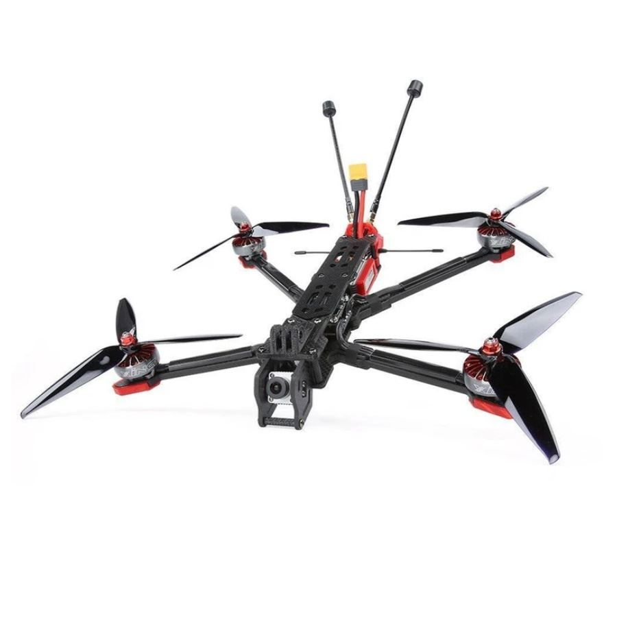

iFlight Chimera 7¶
The iFlight Chimera 7 is a relatively low cost 7” LR frame which can also be bought as a BNF or RTF kit which will need some modifications
Parts List¶
XING 2806.5 1300KV / XING2 2809 1250KV / T-Motor F90 1300KV Motor x4
Lumenier LUX H7 HD Ultimate / Matek H743 Slim autopilot
Gemfan 7040 propellers x4
Matek M8Q-5883 GPS
TBS Triumph Pro LR antenna
TBS Tracer Sleeve Dipole x2
Turnigy Graphene Panther 3000mAh 6S 75C battery or similar
RC transmitter with at least 6 channels like the Radiomaster RX16S
This frame will also take the DJI digital HD VTX system. To build an ArduPilot compatible version of the RTF kit the autopilot and ESC will need to be changed out from those shipped.
Connection and Setup¶
Complete build instructions are given in the blog and video series
Firmware used: Copter-4.1 and Copter-4.2 of MatekH743-bdshot
Parameter file: iflight-chimera7.param
This parameter file can also be loaded using the Mission Planner’s Config/Tuning >> Full Parameter Tree page by selecting “iflight-chimera7” from the drop down on the middle right and then push the “Load Presaved” button.